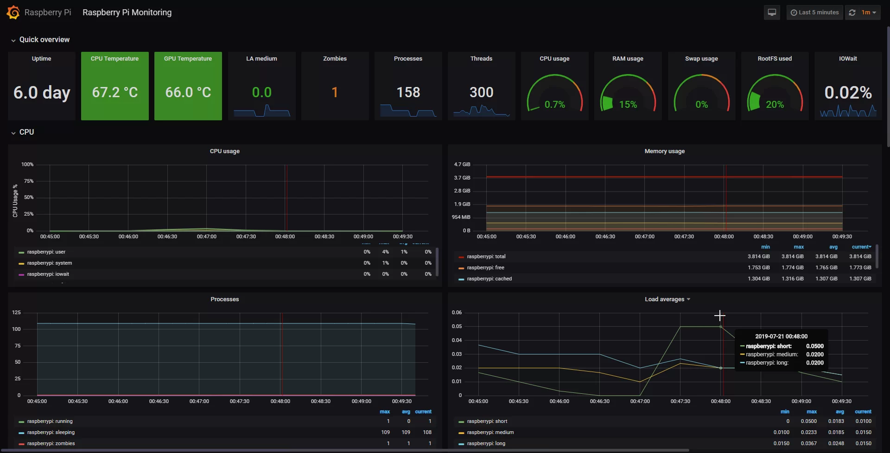

El objetivo principal es la Supervisión Continua de la infraestructura de red de Chitech. Esto permite a los responsables reaccionar ante fallos y optimizar el rendimiento de la red y los servidores.
Para llevar a cabo el monitoreo se utiliza el *stack* de contenedores Docker, basado en herramientas líderes de software libre: